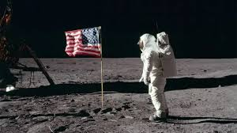
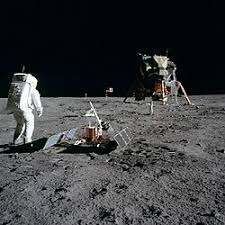

Mision Apolo 11 (1969) Primer alunizaje tripulado

Objetivo y contexto historico
La mision Apolo 11 fue la primera en llevar seres humanos a la superficie lunar y traerlos de regreso a la Tierra de manera segura. Este logro cumplio el objetivo nacional establecido por el presidente John F. Kennedy en 1961 de realizar un alunizaje tripulado antes de que finalizara la decada. La mision represento un hito en la carrera espacial durante la Guerra Fria, demostrando la capacidad tecnologica y cientifica de Estados Unidos.
Tripulacion
Neil Armstrong (Comandante)
Edwin "Buzz" Aldrin (Piloto del modulo lunar)
Michael Collins (Piloto del modulo de comando)
Desarrollo de la mision
El Apolo 11 fue lanzado el 16 de julio de 1969 desde el Centro Espacial Kennedy en Florida. Despues de un viaje de tres dias, la nave entro en orbita lunar. El 20 de julio, el modulo lunar "Eagle" descendio a la superficie de la Luna en el Mar de la Tranquilidad. Neil Armstrong fue el primer ser humano en pisar la Luna, seguido por Buzz Aldrin. Durante su estancia de aproximadamente 21 horas y 36 minutos en la superficie lunar, recolectaron 21.5 kg de muestras de rocas y suelo. El 24 de julio, la tripulacion regreso a la Tierra, amerizando en el Oceano Pacifico.

Logros y legado
La mision Apolo 11 demostro la viabilidad de los vuelos espaciales tripulados a la Luna y establecio un precedente para futuras exploraciones espaciales. Ademas, proporciono valiosa informacion cientifica sobre la composicion y geologia lunar. El exito de la mision fortalecio el liderazgo de Estados Unidos en la exploracion espacial.
Video sobre la mision
https://www.youtube.com/watch?v=16AhQaStWxg
REGRESAR